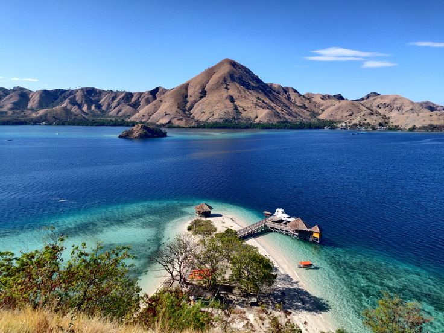
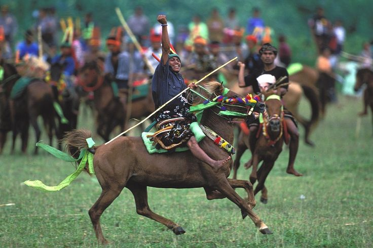
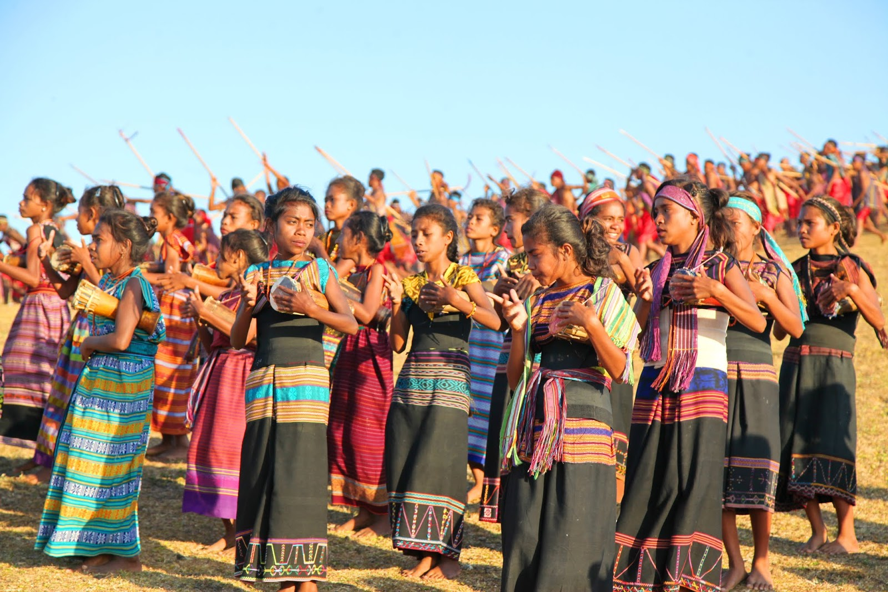

Apa itu Pariwisata Berkelanjutan?

Pariwisata berkelanjutan adalah konsep mengunjungi suatu tempat sebagai wisatawan dan berusaha memberikan dampak positif terhadap lingkungan, sosial budaya, dan ekonomi. Pariwisata meliputi transportasi utama, transportasi lokal, akomodasi, hiburan, rekreasi, makanan, dan belanja.
Pariwisata Bahari

Pariwisata bahari di Indonesia menawarkan pengalaman yang kaya akan keindahan alam dan budaya. Dengan garis pantai yang panjang, Indonesia memiliki beragam destinasi wisata bahari, mulai dari pulau-pulau eksotis hingga taman nasional bawah laut.
Bagaimana Cara Menjaga Kelestarian Budaya Lokal?
Salah satu cara efektif untuk menjaga kelestarian budaya lokal di tengah pesatnya perkembangan ekonomi adalah melalui sosialisasi pariwisata berkelanjutan. Dengan gencar mensosialisasikan konsep ini ke berbagai destinasi wisata di Indonesia, kita dapat mendorong masyarakat untuk lebih peduli terhadap lingkungan dan budaya lokal.
Dengan memberikan mereka pemahaman tentang pentingnya pelestarian budaya dan lingkungan, serta melibatkan mereka dalam perencanaan dan pengambilan keputusan, diharapkan mereka akan lebih peduli dan menjaga warisan budaya mereka. Selain itu, perlu adanya regulasi yang jelas dan penegakan hukum yang tegas untuk mencegah eksploitasi sumber daya alam dan budaya. Dengan demikian, pariwisata dapat menjadi alat untuk meningkatkan kesejahteraan masyarakat tanpa mengorbankan kelestarian lingkungan dan budaya.
Dampak Positif dan Negatif
Pariwisata memang menjadi pisau bermata dua bagi daerah seperti Labuan Bajo. Di satu sisi, ia mendorong pertumbuhan ekonomi, mempromosikan budaya lokal, dan meningkatkan infrastruktur. Namun, di sisi lain, ia juga berpotensi merusak lingkungan dan mengubah nilai-nilai budaya masyarakat. Untuk menjaga keseimbangan ini, diperlukan pendekatan yang komprehensif. Salah satu kuncinya adalah melibatkan masyarakat lokal secara aktif dalam pengelolaan pariwisata. Pariwisata berkelanjutan diharapkan dapat mengurangi dampak negatif pariwisata, melindungi lingkungan, dan menjamin keberlanjutan pariwisata jangka panjang.
Jika kita tidak segera bertindak untuk mengatasi dampak negatif pariwisata di Labuan Bajo, kita berisiko kehilangan identitas budaya yang unik. Solusi yang dapat kita ambil adalah dengan menggelar konferensi budaya secara berkala. Acara ini penting untuk menjaga kelestarian tradisi dan melibatkan masyarakat dalam upaya pelestarian. Selain itu, kita perlu memastikan bahwa wisatawan yang berkunjung ke Labuan Bajo memahami dan menghormati budaya serta lingkungan setempat. Dengan menerapkan prinsip-prinsip pariwisata berkelanjutan, kita dapat menjaga keseimbangan antara pertumbuhan ekonomi dan pelestarian budaya serta lingkungan. Melalui upaya bersama, kita dapat memastikan bahwa pariwisata di Labuan Bajo tetap lestari untuk generasi mendatang.
Respons Masyarakat Labuan Bajo
Masyarakat Labuan Bajo telah memberikan respons yang sangat positif terhadap perkembangan pariwisata di daerahnya. Keterlibatan mereka dalam berbagai sektor pariwisata, seperti usaha oleh-oleh, paket wisata, hotel, dan homestay, telah mendorong pertumbuhan ekonomi yang signifikan. Dampak multiplikasi dari sektor pariwisata ini telah dirasakan secara luas oleh masyarakat.
Selain itu, interaksi langsung dengan wisatawan asing telah mendorong masyarakat lokal untuk lebih proaktif dalam mempelajari bahasa Inggris, meningkatkan kemampuan komunikasi mereka, dan memperluas wawasan. Adaptasi masyarakat terhadap dinamika pariwisata di Labuan Bajo menunjukkan ketangguhan dan kemampuan mereka dalam memanfaatkan peluang yang ada.
Kesimpulan
Pariwisata di NTT, terutama wisata bahari seperti Taman Nasional Komodo, memberikan dampak positif pada ekonomi dan infrastruktur. Budaya lokal, seperti Tari Caci, juga menjadi daya tarik wisata. Masyarakat terlibat aktif dalam sektor usaha terkait wisata, seperti penginapan dan oleh-oleh. Namun, ada kekhawatiran bahwa interaksi dengan wisatawan dapat mengubah mindset dan mengancam identitas budaya. Untuk menjaga kelestarian budaya, diperlukan upaya melalui konferensi budaya dan pariwisata berkelanjutan, agar tradisi dan lingkungan tetap terjaga di tengah perkembangan ekonomi.